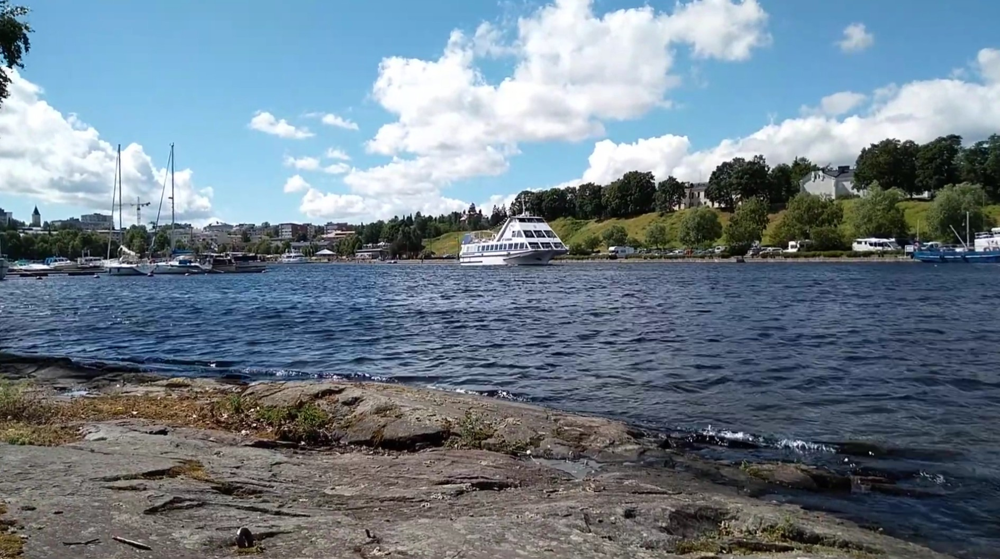

Risteily Saimaan maisemissa
Taustamusaa
Upeat maisemat ja maistuva ruoka takaavat onnistuneen kesäpäivän. Avara ja valoisa M/S Camilla on sisävesialus, jossa viihtyvät niin aikuiset kuin lapset. 350-paikkaisessa laivassa on 180-paikkainen à la carte -ravintola, näköalabaari sekä suuri aurinkokansi.
M/S Camilla on Ranskassa vuonna 1987 rakennettu ravintolalaiva, joka on toiminut Lappeenrannan satamassa vuodesta 1990 lähtien.
Saapuminen Lappeenrantaan: alus on ollut Lappeenrannan Laivat Oy:n omistuksessa ja kotisatamassa kesästä 1990 alkaen. Omistajanvaihdos: elokuussa 2019 omistus siirtyi Saku Hyttisen yhtiölle (Ysituote Oy / Karelia Lines Oy). Nykyään alus toimii Karelia Linesin operoimana ja tarjoaa à la carte -ravintolan, näköalabaarin ja aurinkokannen.

